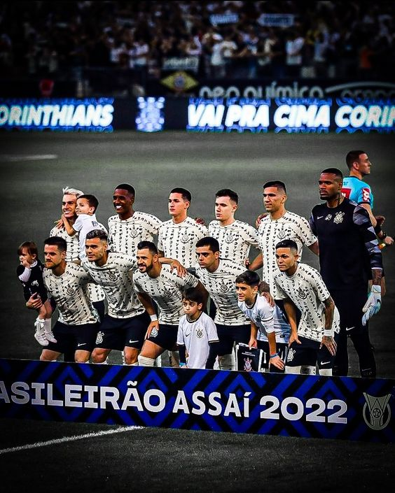
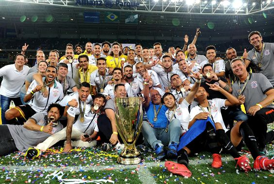
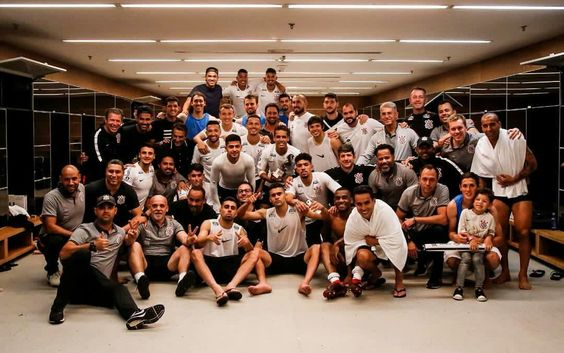

Salve o Corinthians
O campeao dos campeoes
Eternamente dentro dos nossos coraces
Salve o Corinthians
De tradições e glórias mil
Tu és orgulho
Dos desportistas do Brasil
Teu passado é uma bandeira
Teu presente, uma lição
Vencedor em cada jogo
Corinthians, grande campeão
O Sport Club Corinthians Paulista, conhecido popularmente como Corinthians, é um dos clubes de futebol mais importantes e populares do Brasil. Fundado em 1º de setembro de 1910, na cidade de São Paulo, o Corinthians tem uma história rica e uma base de fãs apaixonada em todo o país.

O clube foi criado por um grupo de operários do bairro do Bom Retiro, que se reuniram para fundar uma equipe de futebol que representasse os trabalhadores da região. Desde então, o Corinthians se tornou uma instituição icônica no cenário esportivo brasileiro, com uma identidade forte e uma legião de torcedores fieis.
Ao longo de sua história, o Corinthians conquistou inúmeros títulos e troféus, incluindo o Campeonato Brasileiro, a Copa do Brasil e o Campeonato Paulista. O clube também teve sucesso internacional, ganhando a Copa Libertadores da América e o Mundial de Clubes da FIFA.
Além do sucesso em campo, o Corinthians também é conhecido por sua torcida apaixonada e sua atmosfera única nos estádios. O estádio do clube, a Arena Corinthians, é um dos mais modernos e imponentes do país, e recebe milhares de torcedores em cada partida.
A identidade visual do Corinthians é marcada pelas cores preto e branca, que adornam o uniforme do clube e são símbolos de sua tradição e história. O escudo do Corinthians também é amplamente reconhecido, apresentando as iniciais do clube e uma âncora, que representa a origem operária do time.
Além do futebol, o Corinthians também possui equipes em outras modalidades esportivas, como basquete, vôlei e futsal. O clube busca sempre promover o esporte e a inclusão social, oferecendo oportunidades para jovens talentos e apoiando iniciativas comunitárias.
A relação entre o Corinthians e sua torcida vai além do campo de jogo. Os torcedores do clube são conhecidos por sua paixão e devoção, acompanhando o time em todos os momentos, seja na vitória ou na derrota. Essa ligação única cria uma atmosfera especial em cada partida e faz do Corinthians mais do que apenas um clube de futebol, mas sim uma verdadeira paixão nacional.
O Corinthians também tem uma presença forte nas redes sociais e na mídia, mantendo os fãs informados sobre as últimas notícias do clube e interagindo com a comunidade corinthiana em todo o mundo. Essa comunicação aberta e transparente fortalece ainda mais o vínculo entre o clube e seus torcedores.
Além de sua presença no Brasil, o Corinthians também possui uma grande base de fãs em todo o mundo, com torcedores espalhados por diversos países. Essa internacionalização do clube reflete sua influência global e sua importância no cenário esportivo internacional.
O legado do Corinthians vai além do futebol e do esporte em si. O clube é um símbolo de luta, superação e determinação, inspirando gerações de brasileiros e deixando um impacto duradouro na história do país. Seja dentro ou fora de campo, o Corinthians continua a ser uma fonte de orgulho e inspiração para milhões de pessoas em todo o mundo.